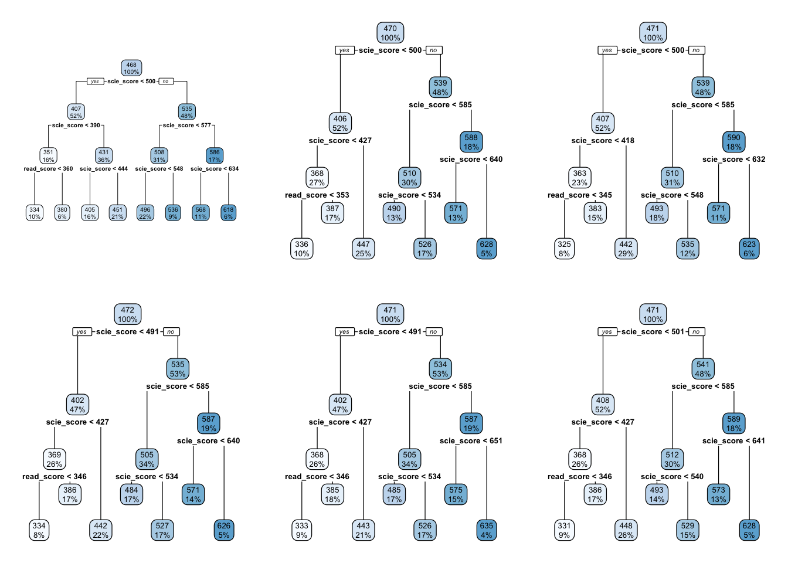
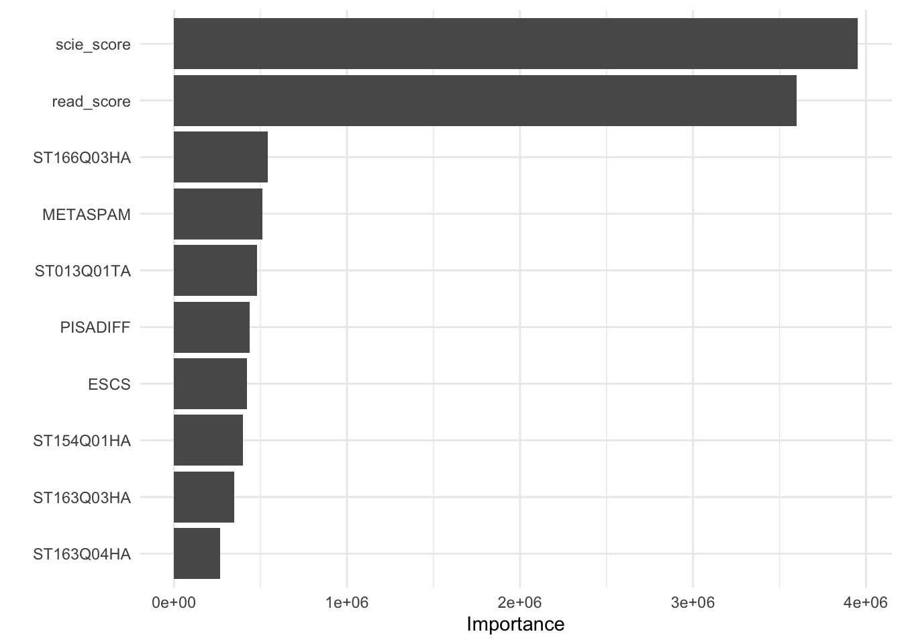
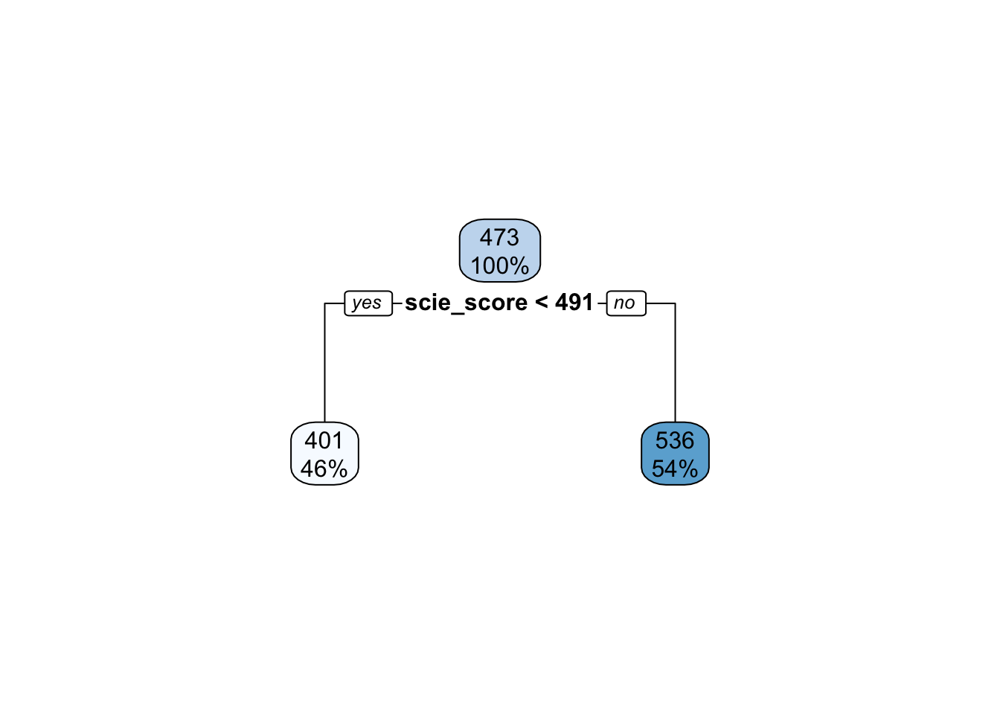
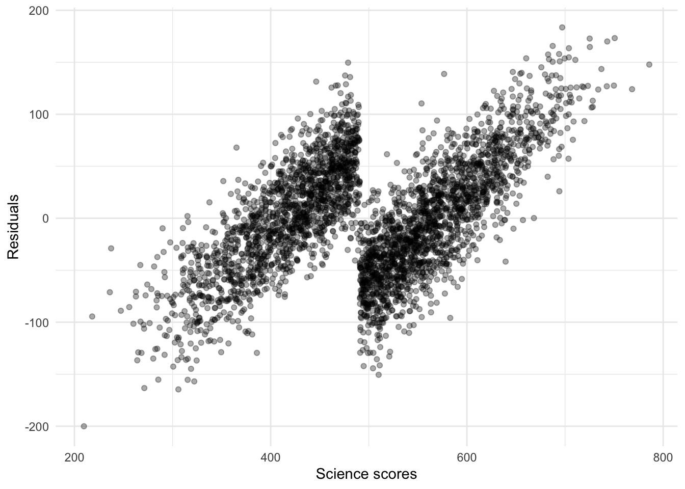
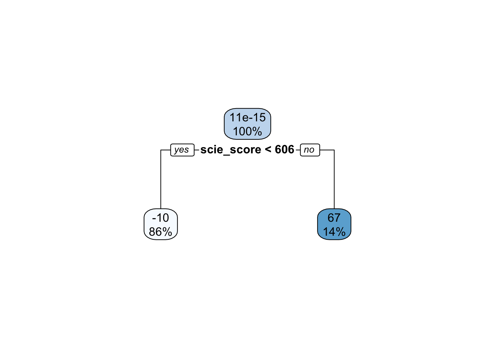
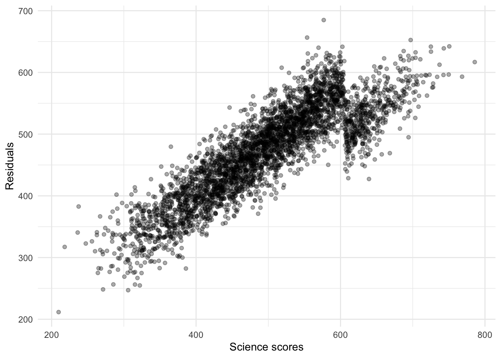
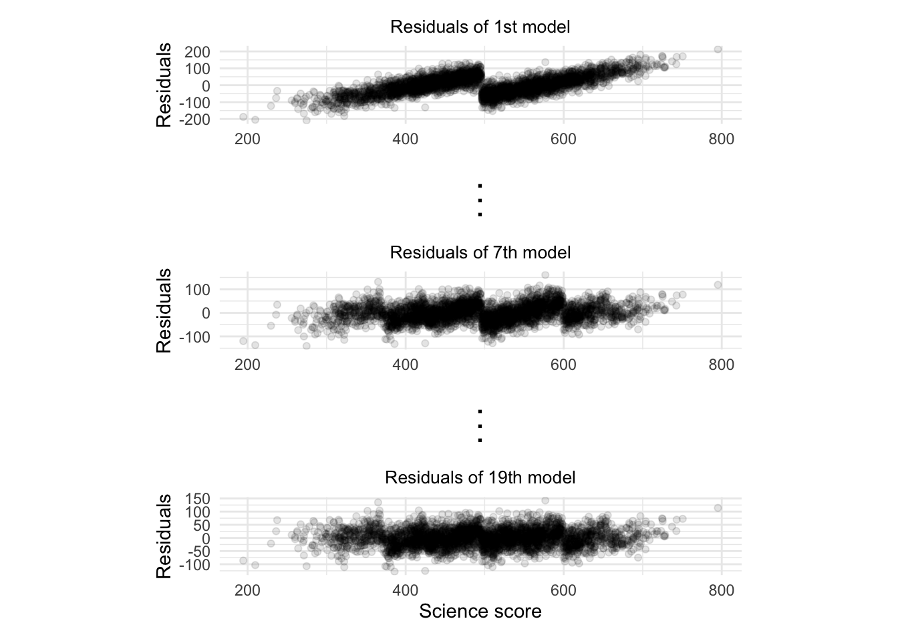

Chapter 3 Tree-based methods
In this chapter we will touch upon the most popular tree-based methods used in machine learning. Haven’t heard of the term “tree-based methods”? Do not panic. The idea behind tree-based methods is very simple and we’ll explain how they work step by step through the basics. Most of the material on this chapter was built upon Boehmke and Greenwell (2019) and James et al. (2013).
Before we begin, let’s load tidyflow and tidymodels and read the data that we’ll be using.
library(tidymodels)
library(tidyflow)
library(rpart.plot)
library(vip)
library(baguette)
data_link <- "https://raw.githubusercontent.com/cimentadaj/ml_socsci/master/data/pisa_us_2018.csv"
pisa <- read.csv(data_link)3.1 Decision trees
Decision trees are simple models. In fact, they are even simpler than linear models. They require little statistical background and are in fact among the simplest models to communicate to a general audience. In particular, the visualizations used for decision trees are very powerful in conveying information and can even serve as an exploratory avenue for social research.
Throughout this chapter, we’ll be using the PISA data set from the regularization chapter. On this example we’ll be focusing on predicting the math_score of students in the United States, based on the socio economic status of the parents (named HISEI in the data; the higher the HISEI variable, the higher the socio economic status), the father’s education (named FISCED in the data; coded as several categories from 0 to 6 where 6 is high education) and whether the child repeated a grade (named REPEAT in the data). REPEAT is a dummy variable where 1 means the child repeated a grade and 0 no repetition.
Decision trees, as their name conveys, are tree-like diagrams. They work by defining yes-or-no rules based on the data and assign the most common value for each respondent within their final branch. The best way to learn about decision trees is by looking at one. Let’s do that:

In this example the top-most box which says HISEI < 56 is the root node. This is the most important variable that predicts math_score. Inside the blue box you can see two numbers: \(100\%\) which means that the entire sample is present in this node and the number 474, the average test score for mathematics for the entire sample:
On both sides of the root node (HISEI < 56) there is a yes and a no. Decision trees work by partitioning variables into yes-or-no branches. The yes branch satisfies the name of root (HISEI < 56) and always branches out to the left:

In contrast, the no branch always branches out to the right:

The criteria for separating into yes-or-no branches is that respondents must be very similar within branches and very different between branches (later in this chapter I will explain in detail which criteria is used and how). The decision tree figures out that respondents that have an HISEI below \(56\) and above \(56\) are the most different with respect to the mathematics score. The left branch (where there is a yes in the root node) are those which have a HISEI below 56 and the right branch (where there is a no) are those which have a HISEI above \(56\). Let’s call these two groups the low and high SES respectively. If we look at the two boxes that come down from these branches, the low SES branch has an average math score of \(446\) while the high SES branch has an average test score of \(501\):

For the sake of simplicity, let’s focus now on the branch of the low SES group (the left branch). The second node coming out of the low SES branch contains 50% of the sample and an average math score of \(446\). This is the node with the rule REPEAT >= 0.5:

This ‘intermediate’ node is called internal node. For calculating this internal node, the decision tree algorithm limits the entire data set to only those which have low SES (literally, the decision tree does something like pisa[pisa$HISEI < 56, ]) and asks the same question that it did in the root node: of all the variables in the model which one separates two branches such that respondents are very similar within the branch but very different between the branches with respect to math_score?
For those with low SES background, this variable is whether the child repeated a grade or not. In particular, those coming from low SES background which repeated a grade, had an average math score of \(387\) whereas those who didn’t have an average math score of \(456\):

These two nodes at the bottom are called leaf nodes because they are like the ‘leafs of the tree’. Leaf nodes are of particular importance because they are the ones that dictate what the final value of math_score will be. Any new data that is predicted with this model will always give an average math_score of \(456\) for those of low SES background who didn’t repeat a grade:

Similarly, any respondent from high SES background, with a highly educated father who didn’t repeat a grade, will get assigned a math_score of \(527\):

That is it. That is a decision tree in it’s simplest form. It contains a root node and several internal and leaf nodes and it can be interpreted just as we just did. The right branch of the tree can be summarized with the same interpretation. For example, for high SES respondents, father’s education (FISCED) is more important than REPEAT to separate between math scores:

This is the case because it comes first in the tree. Substantially, this might be due to the fact that there is higher variation in education credentials for parents of high SES background than for those of low SES background. We can see that those with the highest father’s education (FISCED above \(5.5\)), the average math score is \(524\) whereas those with father’s education below \(5.5\) have a math score of \(478\).
Did you notice that we haven’t interpreted any coefficients? That’s right. Decision trees have no coefficients and many other machine learning algorithms also don’t produce coefficients. Although for the case of decision trees this is because the model produces information in another way (through the visualization of trees), lack of coefficients is common in machine learning models because they are too complex to generate coefficients for single predictors. These models are non-linear, non-parametric in nature, producing very complex relationships that are difficult to summarize as coefficients. Instead, they produce predictions. We’ll be delving into this topic in future sections in detail.
These examples show that decision trees are a great tool for exploratory analysis and I strongly believe they have an inmense potential for exploring interactions in social science research. In case you didn’t notice it, we literally just interpreted an interaction term that social scientists would routinely use in linear models. Without having to worry about statistical significance or plotting marginal effects, social scientists can use decision trees as an exploratory medium to understand interactions in an intuitive way.
You might be asking yourself, how do we fit these models and visualize them? tidyflow and tidymodels have got you covered. For example, for fitting the model from above, we can begin our tidyflow, add a split, a formula and define the decision tree:
# Define the decision tree and tell it the the dependent
# variable is continuous ('mode' = 'regression')
mod1 <- set_engine(decision_tree(mode = "regression"), "rpart")
tflow <-
# Plug the data
pisa %>%
# Begin the tidyflow
tidyflow(seed = 23151) %>%
# Separate the data into training/testing
plug_split(initial_split) %>%
# Plug the formula
plug_formula(math_score ~ FISCED + HISEI + REPEAT) %>%
# Plug the model
plug_model(mod1)
vanilla_fit <- fit(tflow)
tree <- pull_tflow_fit(vanilla_fit)$fit
rpart.plot(tree)
All plug_* functions serve to build your machine learning workflow and the model decision_tree serves to define the decision tree and all of the arguments. rpart.plot on the other hand, is a function used specifically for plotting decision trees (that is why we loaded the package rpart.plot at the beginning). No need to delve much into this function. It just works if you pass it a decision tree model: that is why pull the model fit before calling it.
I’ve told all the good things about decision trees but they have important disadvantages. There are two that we’ll discuss in this chapter. The first one is that decision trees tend to overfit a lot. Just for the sake of exemplifying this, let’s switch to another example. Let’s say we’re trying to understand which variables are related to whether teachers set goals in the classroom. Substantially, this example might not make a lot of sense, but but let’s follow along just to show how much trees can overfit the data. This variable is named ST102Q01TA. Let’s plug it into our tidyflow and visualize the tree:
## ST100Q01TA
## ST102Q01TA
## IC009Q07NA
## ST011Q03TA
## ST011Q05TA
## ST011Q10TA
# We can recicle the entire `tflow` from above and just
# replace the formula:
tflow <-
tflow %>%
replace_formula(ST102Q01TA ~ .)
fit_complex <- fit(tflow)
tree <- pull_tflow_fit(fit_complex)$fit
rpart.plot(tree)
The tree is quite big compared to our previous example and makes the interpretation more difficult. However, equally important, some leaf nodes are very small. Decision trees can capture a lot of noise and mimic the data very closely. \(6\) leaf nodes have less than \(3\%\) of the sample. These are leaf nodes with very weak statistical power:

What would happen if a tiny \(1\%\) of those leaf nodes respondend slightly different? It is possible we get a complete different tree. Decision trees are not well known for being robust. In fact, it is one of its main weaknesses. However, decision trees have an argument called min_n that force the tree to discard any node that has a number of observations below your specified minimum. Let’s run the model above and set the minimum number of observation per node to be \(200\):
dectree <- update(mod1, min_n = 200)
tflow <-
tflow %>%
replace_model(dectree)
fit_complex <- fit(tflow)
tree <- pull_tflow_fit(fit_complex)$fit
rpart.plot(tree)
The tree was reduced considerably now. There are fewer leaf nodes and all nodes have a greater sample size than before.
You might be wondering: what should the minimum sample size be? There is no easy answer for this. The rule of thumb should be relative to your data and research question. In particular, the identification of small nodes should be analyzed with care. Perhaps there is a group of outliers that consitute a node and it’s not a problem of statistical noise. By increasing the minimum sample size for each node you would be destroying that statistical finding.
For example, suppose we are studying welfare social expenditure as the dependent variable and then we had other independent variables, among which are country names. Scandinavian countries might group pretty well into a solitary node because they are super powers in welfare spending (these are Denmark, Norway, Sweden and Finland). If we increased the minimum sample size to \(10\), we might group them with Germany and France, which are completely different in substantive terms. The best rule of thumb I can recommend is no other than to study your problem at hand with great care and make decisions accordingly. It might make sense to increase the sample or it might not depending on the research question, the sample size, whether you’re exploring the data or whether you’re interested in predicting on new data.
Despite min_n helping to make the tree more robust, there are still several nodes with low sample sizes. Another way to approach this problem is through the depth of the tree. As can be seen from the previous plot, decision trees can create leaf nodes which are very small. In other more complicated scenarios, your tree might get huge. Yes, huge:

More often that not, these huge trees are just overfitting the data. They are creating very small nodes that capture noise from the data and when you’re predicting on new data, they perform terribly bad. As well as the min_n argument, decision trees have another argument called tree_depth. This argument forces the tree to stop growing if it passes the maximum depth of the tree as measured in nodes. Let’s run our previous example with only a depth of three nodes:
dectree <- update(mod1, min_n = 200, tree_depth = 3)
tflow <-
tflow %>%
replace_model(dectree)
fit_complex <- fit(tflow)
tree <- pull_tflow_fit(fit_complex)$fit
rpart.plot(tree)
The tree was reduced considerably now in combination with the minimun number of respondents within each node. In fact, there is only one node that has a sample size lower than \(3\%\). The min_n and tree_depth can help you reduce the overfitting of your tree, but don’t think these are easy fixes. Decision trees are simply to easy to overfit the data and as we’ll see, there are more advanced tree methods that can help to fix this.
Note that we’ve been interpreting decision trees in a ‘subjective’ fashion. That is, we’ve been cutting the nodes of the trees from subjective criteria that makes sense to our research problem. This is how we social scientists would analyze the data. The tree should model our theoretical problem and make substantive sense. However, for machine learning, we have other criteria: how well it predicts. Let’s check how our model predicts at this point:
## # A tibble: 1 x 3
## .metric .estimator .estimate
## <chr> <chr> <dbl>
## 1 rmse standard 0.514Our predictions for each set goals is off by around \(.5\) in a scale of \(1\) through \(4\). This is not terribly bad. For example, it means that for every child that answered a \(2\), on average, we have an error of around \(.5\). This means that any prediction for a single number runs the risk of being wrongly predicting either the number from above or below (a child with a \(2\) might get a wrong prediction of \(3\) or a \(1\) but hardly a \(4\)). To improve prediction, we can allow tidyflow to search for the best combination of min_n and tree_depth that maximizes prediction. Let’s perform a grid search for these two tuning values. However, let’s set the range of tuning values ourselves:
tune_mod <- update(dectree, min_n = tune(), tree_depth = tune())
tflow <-
tflow %>%
plug_resample(vfold_cv, v = 5) %>%
plug_grid(
expand.grid,
tree_depth = c(1, 3, 9),
min_n = c(50, 100)
) %>%
replace_model(tune_mod)
fit_tuned <- fit(tflow)
fit_tuned %>%
pull_tflow_fit_tuning() %>%
show_best(metric = "rmse")## # A tibble: 5 x 7
## tree_depth min_n .metric .estimator mean n std_err
## <dbl> <dbl> <chr> <chr> <dbl> <int> <dbl>
## 1 9 50 rmse standard 0.459 5 0.0126
## 2 9 100 rmse standard 0.459 5 0.0126
## 3 3 50 rmse standard 0.518 5 0.0116
## 4 3 100 rmse standard 0.518 5 0.0116
## 5 1 50 rmse standard 0.649 5 0.0102It seems that our predictions on the training data were slightly overfitting the data, as the best error from the cross-validation search is centered around 0.459 with a standard error of 0.01. Let’s explore whether the error changes between the minimum sample size and the tree depth:
tree_depth_lvl <- paste0("Tree depth: ", c(1, 3, 9))
fit_tuned %>%
pull_tflow_fit_tuning() %>%
collect_metrics() %>%
mutate(ci_low = mean - (1.96 * std_err),
ci_high = mean + (1.96 * std_err),
tree_depth = factor(paste0("Tree depth: ", tree_depth), levels = tree_depth_lvl),
min_n = factor(min_n, levels = c("50", "100"))) %>%
filter(.metric == "rmse") %>%
ggplot(aes(min_n, mean)) +
geom_point() +
geom_errorbar(aes(ymin = ci_low, ymax = ci_high), width = .1) +
scale_x_discrete("Minimum sample size per node") +
scale_y_continuous("Average RMSE") +
facet_wrap(~ tree_depth, nrow = 1) +
theme_minimal()
On the x axis we have the minimum sample size per node (these are the values for min_n) and on the y axis we have the error of the model through cross-validation (the \(RMSE\)). The lower each points is on the plot, the better, since it means that the error is lower.
Let’s begin with the first plot on the left. The points represent the error of the model with different sample sizes for the nodes with a fixed tree depth of \(1\). For a tree depth of \(1\), the error of the model is around .65. However, as the number of trees increases (the additional plots to the right), the error comes down to nearly .47 when there is a tree_depth of 9. It seems that the simplest model with the lowest \(RMSE\) has a tree_depth of 9 and a minimum sample size of 50. We calculated this ourselves for this example, but complete_tflow can calculate this for you:
final_model <-
fit_tuned %>%
complete_tflow(metric = "rmse",
tree_depth,
method = "select_by_one_std_err")
train_err <-
final_model %>%
predict_training() %>%
rmse(ST102Q01TA, .pred)
test_err <-
final_model %>%
predict_testing() %>%
rmse(ST102Q01TA, .pred)
c("testing error" = test_err$.estimate, "training error" = train_err$.estimate)## testing error training error
## 0.4644939 0.4512248Our testing error and our training error have a difference of only \(0.01\), not bad. The cross-validation tuning seemed to have helped avoid a great deal of overfitting.
Before we go through the next section, I want to briefly mention an alternative to tree_depth and min_n. A technique called ‘tree pruning’ is also very common for modeling decision trees. It first grows a very large and complex tree and then starts pruning the leafs. This technique is also very useful but due to the lack of time, we won’t cover this in the course. You can check out the material on this technique from the resources outlined in the first paragraph of this section.
3.1.1 Advanced: how do trees choose where to split?
Throughout most of the chapter we’ve seen that trees find optimal ‘splits’ that make the respondents very different between the splits and very similar within them. But how do decision trees make these splits? Let’s work out a simple example using the HISEI variable from the first model in this section.
HISEI is an index for the socio-economic status of families. It’s continuous and has a distribution like this:

As we saw in the first tree of this section, HISEI is the root node. To decide on the root node, the decision tree algorithm chooses a random location in the distribution of HISEI and draws a split:

The two sides have an average math_score which serves as the baseline for how different these two groups are. At this point, the algorithm does something very simple: for each split, it calculates the Residual Sum of Squares (RSS). This is just the sum of the math_score of each respondent (\(math_i\)) minus the average math_score (\(\hat{math}\)) for that split squared. In other words, it applies the \(RSS\) for each split:
\[\begin{equation} RSS = \sum_{k = 1}^n(math_i - \hat{math})^2 \end{equation}\]
Each side of the split then has a corresponding \(RSS\):

After that, it calculates the total \(RSS\) of the split by adding the two \(RSS\):

So far we should have a single random split with an associated \(RSS\) for \(HISEI\). The decision tree algorithm is called recursive binary splitting because it is recursive: it repeats itself again many times. It repeats the strategy of \(Split\) -> \(RSS_{split}\) -> \(RSS_{total}\) many times such that we get a distribution of splits and \(RSS\) for \(HISEI\):

This produces a distribution of random splits with an associated metric of fit (\(RSS\)) for \(HISEI\). Recursive binary splitting applies this same logic to every single variable in the model such that you have a distribution of splits for every single variable:
## # A tibble: 8 x 3
## variable random_split total_rss
## <chr> <chr> <chr>
## 1 "HISEI" 41.22 "Total RSS: 34423362"
## 2 "HISEI" 53.77 "Total RSS: 34400218"
## 3 "HISEI" 56.57 "Total RSS: 32523560"
## 4 "" ... ""
## 5 "FISCED" 2 "Total RSS: 35901660"
## 6 "FISCED" 1 "Total RSS: 36085201"
## 7 "FISCED" 5 "Total RSS: 34083264"
## 8 "" ... ""With such a distribution, the algorithm can objectively ask: which random split best separates the data into two branches with the lowest \(RSS\)? And based on that answer, the first node is chosen. After this first node is chosen, two branches grow to both sides. The algorithm then applies exactly the same set of rules recursively for each branch until a maximum depth is reached.
Although this explanation will be in nearly all cases invisible to you, this intuition can help you understand better which criteria is used for choosing a split. For example, understanding how this splitting is done gives you insight into how outliers do not affect the selection of splits because the splitting criteria is random and navigates the entire distribution.
In addition, there might be cases where you might want to switch the \(RSS\) for another loss function because it makes sense for your problem. For example, using decision trees with binary dependent variables merits another type of loss function: Gini impurity. We won’t delve into this but it serves as an example that these are things which are not fixed. These are decision that depend on your research problem and it might make sense to experiment with them if needed.
3.2 Bagging
The problem with decision trees is that even if you work really hard to avoid overfitting, they can be very susceptible to the exact composition of the data. For some extreme cases, you might even get completely different trees every time you run your model. Quite literally, running the same model might offer very different trees if some part of the sample changes. This small simulation predicts math_score on all variables in the pisa data set but in each iteration, makes a random sample from the total dataset:
Figure 3.1: Visualization of many trees from the sample with varying compositions
These drastic differences between each iteration is because decision trees have a lot of variance and very little bias. They learn the current data very well (little bias) but if you generalize them to new data, they can perform very badly (a lot of variance). This is where bagging, or Bootstrap Aggregation comes in.
Before we explain what bagging is all about, let’s spend a minute explaining what bootstrapping is. Let’s work out a manual example and limit our pisa dataset to only five rows, keep a few selected columns and add a unique id for each row:
sel_cols <- c("math_score", "HISEI", "REPEAT", "IMMIG", "read_score")
pisa_small <- pisa[1:5, sel_cols]
pisa_small$id <- 1:5
pisa_small## math_score HISEI REPEAT IMMIG read_score id
## 1 512.7125 28.60 0 1 544.2085 1
## 2 427.3615 59.89 0 1 432.2518 2
## 3 449.9545 39.02 0 1 503.9496 3
## 4 474.5553 26.60 0 1 437.7777 4
## 5 469.1545 76.65 0 1 535.9487 5This is the same pisa dataset but only with the first five rows, and id column for each respondent and some columns. Bootstraping is a statistical technique that randomly picks observations from the sample. This means that some observations might get picked while others might no. In fact, some observations might even get picked many times! We can do this manually in R:
# Sample from the number of rows in `pisa_small`
# and allow certain numbers to be replaced.
set.seed(23551)
row_index <- sample(nrow(pisa_small), replace = TRUE)
pisa_small[row_index, ]## math_score HISEI REPEAT IMMIG read_score id
## 1 512.7125 28.60 0 1 544.2085 1
## 4 474.5553 26.60 0 1 437.7777 4
## 4.1 474.5553 26.60 0 1 437.7777 4
## 3 449.9545 39.02 0 1 503.9496 3
## 5 469.1545 76.65 0 1 535.9487 5We randomly sampled from the data and got the respondent number four repeated twice. We can run this many times and get many resamples of our data:
lapply(1:2, function(x) {
row_index <- sample(nrow(pisa_small), replace = TRUE)
pisa_small[row_index, ]
})## [[1]]
## math_score HISEI REPEAT IMMIG read_score id
## 3 449.9545 39.02 0 1 503.9496 3
## 5 469.1545 76.65 0 1 535.9487 5
## 3.1 449.9545 39.02 0 1 503.9496 3
## 1 512.7125 28.60 0 1 544.2085 1
## 3.2 449.9545 39.02 0 1 503.9496 3
##
## [[2]]
## math_score HISEI REPEAT IMMIG read_score id
## 1 512.7125 28.6 0 1 544.2085 1
## 4 474.5553 26.6 0 1 437.7777 4
## 4.1 474.5553 26.6 0 1 437.7777 4
## 4.2 474.5553 26.6 0 1 437.7777 4
## 4.3 474.5553 26.6 0 1 437.7777 4Since the choosing of rows is random, in some instances we might randomly obtain the same row repeated ten times, in others only one time and others even zero times! This is what bootstrapping is all about. If we run \(10\) bootstraps, it just means we have \(10\) datasets where in each one some rows are repeated many times and others are randomly removed.
Bootstrapping is mainly used to calculate statistics such as standard errors and standard deviations because it has very nice properties to estimate uncertainty in situations where its impossible to calculate it. However, it also has advantages for reducing the variance in models such as decision trees.
Let’s get back to how bagging works. Bagging works by bootstraping your data \(N\) times and fitting \(N\) decision trees. Each of these decision trees has a lot of variance because we allow the tree to overfit the data. The trick with bagging is that we average over the predictions of all the \(N\) decision trees, improving the high variability of each single decision tree.
In the same spirit as before, let’s work out a manual example just so you can truly grasp that intuition. However, don’t worry, there are functions inside tidymodels and tidyflow that will perform all of this for you.
Let’s adapt the code from above to use the original pisa data, sample only 60% of the data in each bootstrap and generate 20 copies of our data with random picks of rows in each iteration:
pisa$id <- 1:nrow(pisa)
bootstrap_pisa <-
lapply(1:20, function(x) {
row_index <- sample(nrow(pisa) * .6, replace = TRUE)
pisa[row_index, ]
})The result is named bootstrap_pisa and is list with 20 data frames. You can inspect the first two with bootstrap_pisa[[1]] and bootstrap_pisa[[2]]. Inside each of these, there should be a data frame with 60% of the original number of rows of the pisa data where each row was randomly picked. Some of these might be repeated many times, others might just be there once and others might not even be there.
Let’s now loop over these 20 datasets, fit a decision tree to each one and predict on the original pisa data. The result of this loop should be 20 data frames each with a prediction for every respondent:
tflow <-
tidyflow() %>%
plug_formula(math_score ~ .) %>%
plug_model(decision_tree(mode = "regression") %>% set_engine("rpart"))
all_pred_models <-
lapply(bootstrap_pisa, function(x) {
small_model <-
tflow %>%
plug_data(x) %>%
fit()
cbind(
pisa["id"],
predict(small_model, new_data = pisa)
)
})The first slot contains predictions for all respondents. Let’s confirm that:
## id .pred
## 1 1 493.6071
## 2 2 378.5172
## 3 3 440.5835
## 4 4 440.5835
## 5 5 493.6071
## 6 6 440.5835Here we only show the first five rows, but you can check that it matches the same number of rows as the original pisa with nrow(all_pred_model[[1]]) and nrow(pisa). Let’s confirm the same thing for the second slot:
## id .pred
## 1 1 486.7747
## 2 2 432.6909
## 3 3 432.6909
## 4 4 432.6909
## 5 5 486.7747
## 6 6 486.7747The second slot also contains predictions for all respondents but they are different from the first slot because they are based on a random sample. This same logic is repeated 20 times such that every respondent has 20 predictions. The trick behind bagging is that it averages the prediction of each respondent over the 20 bootstraps.
This averaging has two advantages. First, it allows each single tree to grow as much as possible, allowing it to have a lot of variance and little bias. This has a good property which is little bias but a negative aspect, which is a lot of variance. Bagging compensates this high level of variance by averaging the predictions of all the small trees:
# Combine all the 20 predictions into one data frame
all_combined <- all_pred_models[[1]]
for (i in seq_along(all_pred_models)[-1]) {
all_combined <- cbind(all_combined, all_pred_models[[i]][-1])
}
# Average over the 20 predictions
res <- data.frame(id = all_combined[1], final_pred = rowMeans(all_combined[-1]))
# Final prediction for each respondent
head(res)## id final_pred
## 1 1 494.1934
## 2 2 403.6330
## 3 3 436.1936
## 4 4 443.5922
## 5 5 491.6506
## 6 6 457.9670We get a final prediction for each respondent. If we wanted to, we could calculate the standard deviation of these 20 predictions for each respondent and generate uncertainty intervals around each respondent’s predictions. More often than not, this is a good idea.
In the previous example we used 20 bootstraps for the sake of simplicity but generally speaking as the number of trees increases, the less variance we will have in the final prediction and thus a stronger model. We can see more clearly the power of combining many trees with the simulation below:

The x axis shows the number of bootstraps (or fitted decision trees, it’s the same) and the y axis shows the average \(RMSE\) in math_score for each of these bagged trees. As we increase the number of decision trees (or bootstraps, it’s the same), there is a substantial reduction in the error rate of math_score. This is an impressive improvement relative to our initial single decision tree.
Having seen the power of increasing the number of trees, how many trees should your model use? For models which exhibit reasonable levels of variability (like our math_score example), \(100\)-\(200\) bootstraps is often enough to stabilize the error in the predictions. However, very unstable models might require up to \(500\) bootstraps.
Let’s fit the same model we just implemented manually above using tidymodels and tidyflow. Bagged trees can be implemented with the function bag_tree from the package baguette. With this package we can control the number of bootstraps with the argument times. We can define our model as usual using tidyflow:
btree <- bag_tree(mode = "regression") %>% set_engine("rpart", times = 50)
tflow <-
pisa %>%
tidyflow(seed = 566521) %>%
plug_split(initial_split) %>%
plug_formula(math_score ~ .) %>%
plug_model(btree)
tflow## ══ Tidyflow ════════════════════════════════════════════════════════════════════
## Data: 4.84K rows x 502 columns
## Split: initial_split w/ default args
## Formula: math_score ~ .
## Resample: None
## Grid: None
## Model:
## Bagged Decision Tree Model Specification (regression)
##
## Main Arguments:
## cost_complexity = 0
## min_n = 2
##
## Engine-Specific Arguments:
## times = 50
##
## Computational engine: rpartYou might be asking yourself, why don’t we define bootstraps inside plug_resample? After all,bootstraps is a resampling technique. We could do that but it doesn’t make sense in this context. plug_resample is aimed more towards doing grid search of tuning values together with plug_grid. Since bag_trees is not performing any type of grid search but rather fitting a model many times and making predictions, it automatically incorporates this procedure inside bag_trees. If instead we were doing a grid search of let’s say, min_n and tree_depth for bag_tree, using plug_resample with boostraps would be perfectly reasonable.
Let’s fit both a simple decision tree and the bagged decision tree, predict on the training set and record the average \(RMSE\) for both:
res_btree <- tflow %>% fit()
res_dtree <- tflow %>% replace_model(decision_tree() %>% set_engine("rpart")) %>% fit()
rmse_dtree <-
res_dtree %>%
predict_training() %>%
rmse(math_score, .pred)
rmse_btree <-
res_btree %>%
predict_training() %>%
rmse(math_score, .pred)
c("Decision tree" = rmse_dtree$.estimate, "Bagged decision tree" = rmse_btree$.estimate)## Decision tree Bagged decision tree
## 33.85131 11.33018The bagged decision tree improves the error rate from \(33\) math test points to \(11\). That is a \(66\%\) reduction in the error rate! That is an impressive improvement for such a simple extension of decision trees. We might decide to improve upon our model by tweaking min_n and tree_depth but you’ll be doing that in the exercises. Instead, let’s predict on the testing data to check whether how much our final model is overfitting the data.
rmse_dtree_test <-
res_dtree %>%
predict_testing() %>%
rmse(math_score, .pred)
rmse_btree_test <-
res_btree %>%
predict_testing() %>%
rmse(math_score, .pred)
c("Decision tree" = rmse_dtree_test$.estimate, "Bagged decision tree" = rmse_btree_test$.estimate)## Decision tree Bagged decision tree
## 34.88733 28.87435It looks like our model is better than the decision tree but it was overfitting the training data considerably.
As all other models, bagging also has limitations. First, although bagged decision trees offer improved predictions over single decision trees, they do this at the expense of interpretability. Unfortunately, there is no equivalent of an ‘average’ tree that we can visualize. Remember, we have \(100\) predictions from \(100\) different trees. It is not possible nor advisable to visualize \(100\) trees. Instead, we can look at the average variable importance. Bagging offers the ‘contribution’ of each variable using loss functions. For continuous variables, it uses the \(RSS\) (which we have described and used throughout this chapter) and for binary variables it uses the Gini index. We can look at the importance of the variables to get a notion of which variables are contributing the most for predictions:
## # A tibble: 501 x 4
## term value std.error used
## <chr> <dbl> <dbl> <int>
## 1 scie_score 23363949. 75426. 50
## 2 read_score 17033482. 69939. 50
## 3 ST166Q03HA 5913918. 66479. 50
## 4 METASPAM 5671665. 68871. 50
## 5 IC152Q08HA 3850699. 304274. 49
## 6 PISADIFF 3046729. 362250. 50
## 7 IC010Q06NA 2691482. 355147. 50
## 8 ST013Q01TA 433681. 142604. 50
## 9 ESCS 329367. 16981. 50
## 10 HOMEPOS 258437. 11440. 50
## # … with 491 more rowsSecondly, bagging might seem like a deal breaker for any type of model (you can apply it to any type of model such as logistic regression, regularized regression, etc..) but it works well only for models which are very unstable. For example, linear regression and logistic regression are models with very little variance. With enough sample size, running a bagged linear regression should return very similar estimates as a single fitted model.
3.3 Random Forests
In section 3.1.1 we worked out a simple example on how decision trees choose where to split. If you remember correctly, decision trees evaluate several cutoff points for all the variables in the data. This is done recursively such that in each split, this iteration is performed again for all variables inside the split. This strategy is clever but fails spectacularly whenever some variables are very correlated with the outcome of the decision tree.
I did not present the code for the simulation in figure 3.1 but I purposedly excluded the variables scie_score and read_score from the data. That’s why they’re never in any of the trees. Why did I do that? Because they are extremely correlated to math_score and dominate the entire tree. Here’s the same simulation including scie_score and read_score:

Regardless of how much the data composition changes between every decision tree, scie_score and read_score are virtually the only two variables present. This is called correlated trees. They are correlated because the predictions between these different trees will be strongly correlated due to the same main variables dominating the trees.
When performing bagged decision trees this can be a problem given that the whole idea behind bagging is to average predictions from very different trees. If we have a variable that is constantly repeated in every single tree, then the predictions will be very similar. Random Forests are an extension of bagged decision trees because they randomly sample \(N\) variables in each split. More specifically, instead of considering all variables in the data, for calculating a given split, random forests pick a random sample of \(N\) variables to be considered for that split.
This intuition can be much more accesible through a manual example. Let’s refer back to the first plot of this chapter:

For estimating the split of HISEI < 56, decision trees evaluate many random splits in the distribution of HISEI and record the total \(RSS\) of each split such that you get a distribution of splits:

This is repeated for every variable and then the best split out of all the variables is chosen as the split. Random Forests differ from decision trees in that instead of evaluating cutoff splits for every variable, they evaluate cutoff splits only for a random sample of \(N\) variables. The number of variables \(N\) used for each split can be chosen by the user and often it is chosen through a grid search. For this manual example, let’s just assume we’ll use half of all the variables in pisa.
For the root node split, we randomly select half of the variables in pisa (pisa has 502 variables), so we randomly choose 251) variables and allow the decision tree to work as usual. It will calculate many random cutoff points for the 251 variables and choose the most optimal cutoff point among the 251 variables. Once the root node is determined, two branches are grown to both sides:

Random Forests repeat exactly the same logic for every split. For example, to determine the best split for the left branch, it randomly samples 251 variables from the total of 502 but this time limiting the sample to those with HISEI < 56. Similarly for the right branch, it will randomly select 251 variables for those with HISEI > 56 and determine the best cutoff split from these limited number of variables. This is then repeated recursively for every split until the usual tree stopping criteria is reached (min_n per node or the tree_depth).
The number of columns to be used in each split is called mtry and there are standard rules of thumb for the number of variables to be randomly picked. In particular, the two most common are \(\sqrt{Total\text{ }number\text{ }of\text{ }variables}\) and \(\frac{Total\text{ }number\text{ }of\text{ }variables}{3}\). For example, using the total number of columns from the pisa dataset (502) and the first equation, it would be \(\sqrt{502}\) which is equal to 22.4053565, rounded down always to the lowest number which is 22. This means that at every split, the random forest will be picking 22 variables at random. As you might expect, if you set mtry to randomly pick the same number of columns in the data, you’re effectively performing a bagged decision tree rather than a random forest. This would be the equivalent of setting mtry to 502 for the pisa example.
This approach of sampling random columns at each split was created to uncorrelate the distribution of decision trees. But, can we be sure that all variables will be used? Well, random sampling is by definition random. On average, all variables will be present in some splits and will allow other variables which are not that strongly correlated with the predictor to play a role in the tree construction.
Random Forests have gained a lot of fame because they often achieve incredible accuracy with just standard values for the tuning parameters (for example, the default mtry of \(\sqrt{Total\text{ }number\text{ }of\text{ }variables}\) is often enough, without having to try multiple values in a grid search). Let’s try running the same math_score example but with a random forest, predict on the training set and calculate the \(RMSE\) of the model:
# Define the random forest
rf_mod <-
rand_forest(mode = "regression") %>%
set_engine("ranger", importance = "impurity")
# Define the `tidyflow` with the random forest model
# and include all variables (including scie_score and read_score)
tflow <-
pisa %>%
tidyflow(seed = 23151) %>%
plug_formula(math_score ~ .) %>%
plug_split(initial_split) %>%
plug_model(rf_mod)
rf_fitted <- tflow %>% fit()
rf_fitted %>%
predict_training() %>%
rmse(math_score, .pred)## # A tibble: 1 x 3
## .metric .estimator .estimate
## <chr> <chr> <dbl>
## 1 rmse standard 16.3It performs slightly worse than the bagged decision trees (the bagged decision tree had an error of 11.33 math test points). Why is that? Let’s look at which variables are important in the random forest:

scie_score and read_score seem to be the most relevant variables. But not only are they the most relevant ones, they are disproportionately the strongest: they both are seven times more important than the next most strongest variable.
When there are only a few very strong predictors (let’s say, two), then you might have a lot of trees which don’t offer a lot of good predictions. In the model we ran above, the total number of variables used at each split was 22 meaning that if scie_score and read_score are the only important variables that predict math_score, they might be excluded from a lot of the splits. This means that out of the 500 default trees that are repated, you might get trees which are not better at predicting math_score than random luck.
Based on this intuition, if we increase the number of variables used at each split, we should see an increase in predictive error. Why? Because it means the scie_score and read_score will have greater probability of being included at each split. Let’s try something close to \(1/3\) of the number of variables (this is 150 variables):
rf_mod <-
rand_forest(mode = "regression", mtry = 150) %>%
set_engine("ranger")
rf_fitted <- tflow %>% replace_model(rf_mod) %>% fit()
rf_fitted %>%
predict_training() %>%
rmse(math_score, .pred)The predictive error is reduced to be the same as the one from the bagged decision tree. However, time wise this model is superior than bag_tree because each decision tree uses less variables in total.
You might be asking youself: if bagged decision trees have a lot of correlated trees and the random forest decorrelates the trees, why is it performing just as well and not better? It’s not entirely clear. Random Forests are considered to be a bit of a ‘black box’ and they might work well in certain cases and bad in others. However, having the intuition of how random forests work can help us to approximate a likely explanation.
If scie_score and read_score are the most important variables for predicting math_score and no other variables have strong correlations with math_score, then excluding these two variables from a model, might produce trees which just don’t predict math_score well. The value of a random forest over bagged decision trees is that each individual tree must have some sort of predictive power despite excluding the strongest predictors.
We can check whether our intuition is correct by running a bagged decision tree and a random forest without scie_score and read_score. If we exclude scie_score and read_score, the remaining variables are very weakly correlated with math_score and thus the random forest produces trees which have richer variability then the bagged trees in predictive performance:
rf_mod <-
rand_forest(mode = "regression", mtry = 150) %>%
set_engine("ranger", importance = "impurity")
bt_mod <-
bag_tree(mode = "regression") %>%
set_engine("rpart")
tflow <- tflow %>% replace_formula(math_score ~ . - scie_score - read_score)
rf_res <- tflow %>% replace_model(rf_mod) %>% fit()
bt_res <- tflow %>% replace_model(bt_mod) %>% fit()
bt_rmse <-
bt_res %>%
predict_training() %>%
rmse(math_score, .pred) %>%
pull(.estimate)
rf_rmse <-
rf_res %>%
predict_training() %>%
rmse(math_score, .pred) %>%
pull(.estimate)
c("Bagged decision trees" = bt_rmse, "Random Forest" = rf_rmse)## Bagged decision trees Random Forest
## 24.32169 21.05124The random forest is performing better than the bagged decision tree, as our reasoning predicted. Having shown this, since we exclude the two most important predictors, the overall error is higher than the previous models. This is expected and we have fitted the previous model just to understand why the random forest is not doing better than the bagged decision tree.
Let’s predict on the testing data to check whether any of the two is overfitting more than the other:
bt_rmse <-
bt_res %>%
predict_testing() %>%
rmse(math_score, .pred) %>%
pull(.estimate)
rf_rmse <-
rf_res %>%
predict_testing() %>%
rmse(math_score, .pred) %>%
pull(.estimate)
c("Bagged decision trees" = bt_rmse, "Random Forest" = rf_rmse)## Bagged decision trees Random Forest
## 59.64462 55.13338Both models seem to have been overfitting the data considerably, but they were both overfitting to the same degree: the difference is of around 4 points in both the training and testing data.
Random Forests have several advantages, among which are that they are considerably faster than bagged decision trees because they use only a fraction of the variables used in bagging. However, as we have just showed, their performance gain is not straight forward when the outcome variable only has a few predictors which are strongly correlated with the outcome and very few which are not. There has to be some type of gradient in the correlations between the predictors and the outcome for the random forest to have a considerable improvement.
Our model also offers a good example of how tuning different values of the parameters can offer improved accuracy. If we would’ve stayed with the default mtry of \(\sqrt{Total\text{ }number\text{ }of\text{ }variables}\), the trees would have consistently included uncorrelated variables in each decision tree, making many of our trees obsolete in predictive accuracy. Instead, whenever we’re running random forests, we should try several values of mtry and empirically check which number of columns produce an improvement in the error rate. One important note which sometimes has aroused discussion in machine learning is whether increasing the number of trees increase the chance of overfitting. Increasing the number of trees in a random forest does not lead to increased overfitting because the random forest averages the predictions of all the different trees. Single trees can overfit the data, and that’s ok, because we take the average of all these hundred trees.
Aside from the argument mtry, random forests also have other parameters which can be tuned for their optimal value in a grid search. min_n and trees are the most important ones to tune. Chapter 11 of Boehmke and Greenwell (2019) offers good examples on some of the default values you can explore in a random forest and some general intuitions on which parameters have the biggest impact on computational resources, including the time spent running models. This next example can serve as an introductory template if you want to tune some values for your random forest. Beware, searching for the most optimal value of a 10 x 10 grid through 10 cross-validated sets can take a lot of time (even a few hours). You are effectively running 1000 models:
rf_mod <-
rand_forest(mode = "regression",
mtry = tune(),
trees = tune(),
min_n = tune()) %>%
set_engine("ranger")
tflow <-
pisa %>%
tidyflow(seed = 2151) %>%
plug_split(initial_split) %>%
plug_resample(vfold_cv) %>%
plug_grid(grid_random, levels = 10) %>%
plug_formula(math_score ~ .) %>%
plug_model(rf_mode)
res <- rf_mod %>% fit()
resThe problem with random forest is mostly about computing time. Although they often do really well with the default values, a user often has to perform a grid search that takes up a lot of time. This can be very time consuming and thus it’s always recommended to start with simple models and then elaborate from there.
3.4 Boosting
So far, the tree based methods we’ve seen use decision trees as baseline models and an ensemble approach to calculate the average predictions of all decision trees. Boosting also uses decision trees as the baseline model but the ensemble strategy is fundamentally different.
The name boosting comes from the notion that we fit a weak decision tree and we ‘boost’ it iteratively. This strategy is fundamentally different from bagging and random forests because instead of relying on hundreds of independent decision trees, boosting works by recursively boosting the the result of the same decision tree. How does it do that? Let’s work it out manually with our math_score example.
Let’s fit a very weak decision tree of math_score regressed on scie_score.
dt_tree <-
decision_tree(mode = "regression", tree_depth = 1, min_n = 10) %>%
set_engine("rpart")
pisa_tr <- training(initial_split(pisa))
tflow <-
pisa_tr %>%
tidyflow(seed = 51231) %>%
plug_formula(math_score ~ scie_score) %>%
plug_model(dt_tree)
mod1 <- fit(tflow)
mod1 %>% pull_tflow_fit() %>% .[['fit']] %>% rpart.plot()
This decision tree is very weak. It is only allowed to have a tree depth of 1 which probably means that it is underfitting the data. We can checkout the \(RMSE\) of the model:
## # A tibble: 1 x 3
## .metric .estimator .estimate
## <chr> <chr> <dbl>
## 1 rmse standard 55.3This is not a good model. The \(RMSE\) is much bigger than our previous models. In fact, if we look at the residuals, we should see a very strong pattern, something that signals that a model is not properly specified:
res_mod1 <-
res_mod1 %>%
mutate(.resid = math_score - .pred)
res_mod1 %>%
ggplot(aes(scie_score, .resid)) +
geom_point(alpha = 1/3) +
scale_x_continuous(name = "Science scores") +
scale_y_continuous(name = "Residuals") +
theme_minimal()
Boosting works by predicting the residuals of previous decision tree. In our example, we just fitted our first model and calculated the residuals. Boosting works by fitting a second model but the dependent variable should now be the residuals of the first model rather than the math_score variable. Let’s do that:
# Convert `math_score` to be the residuals of model 1
res_mod1 <- mutate(res_mod1, math_score = .resid)
# Replace the new data in our `tflow`
# In the data `res_mod1`, `math_score`
# is now the residuals of the first model
mod2 <-
tflow %>%
replace_data(res_mod1) %>%
fit()
mod2 %>% pull_tflow_fit() %>% .[['fit']] %>% rpart.plot()
This second model is exactly the same as the first model with the only difference that the dependent variable is the residuals (the unexplained test scores from the first model) of the first model. You can actually see a hint of this in the average score of the dependent variable in the two leaf nodes: they are both in the scale of residuals rather than the scale of math_score (the average math_score is between 300 and 600 points whereas the average of each leaf node is very far from this). Let’s visualize the residuals from the second model:
res_mod2 <-
pisa_tr %>%
cbind(., predict(mod2, new_data = .)) %>%
mutate(.resid = math_score - .pred)
res_mod2 %>%
ggplot(aes(scie_score, .resid)) +
geom_point(alpha = 1/3) +
scale_x_continuous(name = "Science scores") +
scale_y_continuous(name = "Residuals") +
theme_minimal()
The pattern seems to have changed although it’s not clear that it’s closer to a random pattern. In the small-scale example we just did, we only fitted two models (or in machine learning jargon, two trees). If we fitted 20 trees, each using the previous model’s residuals as the dependent variable, we can start to see how the residuals are converging towards randonmness:

As each model tries to improve on the previous model’s residuals, the pattern in the residual converges towards randomness. This means that most of the signal in the model has been captured and the remaining residuals are just random noise.
Understanding this iterative process gives a more intuitive explanation to the term boosting. Boosting is a way for each model to boost the last model’s performance by focusing mostly on observations which had big residuals (and thus greater error).
Suppose that you have now fitted 20 trees. This means that each of the respondents in the data will have 20 predictions. However, these predictions are not the same as in bagging and random forest: you cannot take the average of these predictions because they are not in the same metric as math_score. What? What do we mean that they’re not in the same metric? Let’s compare the predictions of our first model and the second model:
mod1_pred <- predict(mod1, new_data = pisa_tr)
names(mod1_pred) <- "pred_mod1"
mod2_pred <- predict(mod2, new_data = pisa_tr)
names(mod2_pred) <- "pred_mod2"
resid_pred <- cbind(mod1_pred, mod2_pred)
head(resid_pred)## pred_mod1 pred_mod2
## 1 535.6033 -10.47568
## 2 401.1973 -10.47568
## 3 401.1973 -10.47568
## 4 535.6033 -10.47568
## 5 401.1973 -10.47568
## 6 535.6033 -10.47568The predictions from the first model are in the scale of math_score, mostly between 300 and 600 points. However, the predictions of the second model are very small compared to the first predictions. This is because the dependent variable from the second model is the residuals from the first model. All predictions will thus be in the scale of the residuals!
If we ran 20 trees, the predictions from the first model will always be in the scale of the dependent variable while the predictions of the remaining 19 trees will be in the scale of the residuals. With these weird looking 20 predictive values, how can you arrive at the final prediction for each respondent? By adding up the predictions of the 20 trees for each respondent.
For our small-scale example, we can do that with rowSums:
## pred_mod1 pred_mod2 final_pred
## 1 535.6033 -10.47568 525.1276
## 2 401.1973 -10.47568 390.7216
## 3 401.1973 -10.47568 390.7216
## 4 535.6033 -10.47568 525.1276
## 5 401.1973 -10.47568 390.7216
## 6 535.6033 -10.47568 525.1276We have a final prediction for each respondent. How can we use these models to predict on new data? We follow the same logic. We allow each tree to predict on this new data and then sum the predictions of all the trees.
In case you wanted to build some code that applies our manual proceedure automatically, I have written the code below to do it for you. It fits \(N\) models on the same data but after the first model, the dependent variable of the decision tree becomes the residuals of the previous model:
# This is the base decision tree used in each iteration.
dt_tree <-
decision_tree(mode = "regression", tree_depth = 1, min_n = 10) %>%
set_engine("rpart")
# Let's extract the training data separately to fit the models
pisa_tr <- training(initial_split(pisa))
# Construct our tidyflow
tflow <-
pisa_tr %>%
tidyflow(seed = 51231) %>%
plug_formula(math_score ~ scie_score) %>%
plug_model(dt_tree)
# How many trees you want to run?
n <- 40
# This list will have the 40 models
res <- vector("list", n)
# This dataframe will have the 40 predictions
# for each respondent
df_pred <- data.frame(pred_1 = rep(0, nrow(pisa_tr)))
# Fit the first model
res[[1]] <- fit(tflow)
# Repeat this loop 40-1 times
for (i in 1:(n-1)) {
print(paste0("Model ", i))
# Save the prediction from the last model in `df_pred`
df_pred[[paste0("pred_", i)]] <- predict(res[[i]],
new_data = pull_tflow_rawdata(res[[i]]))[[1]]
# Calculate the residuals from the previous model
pred_data <-
cbind(
pull_tflow_rawdata(res[[i]]),
.pred = df_pred[[paste0("pred_", i)]]
) %>%
mutate(math_score = math_score - .pred) %>%
select(-.pred)
# Run the actual model with the residuals from the previous
# model
res[[i + 1]] <-
tflow %>%
replace_data(pred_data) %>%
fit()
}
# Add up the 40 predictions for each respondent
# What is the final RMSE?
pisa_tr %>%
mutate(.pred = rowSums(df_pred)) %>%
as_tibble() %>%
rmse(math_score, .pred)
# Does it match closely the more robust implementation
# from the package gbm?
mod <- gbm::gbm(math_score ~ .,
data = pisa_tr,
n.trees = 40,
interaction.depth = 1,
n.minobsinnode = 10)
pisa_tr %>%
mutate(.pred2 = predict(mod, newdata = pisa_tr, n.trees = 40)) %>%
rmse(math_score, .pred2)This raw implementation of the boosting algorithm is not something you should use for your own research or predictive tasks. Boosting has evolved to be more complex and other features have been introduced. For example, the gbm implementation includes a shrinkage parameter that penalizes each decision tree such that you have to increase the number of trees being fitted. This is a general approach called ‘slow learning’ which usually has better predictive accuracy than our manual approach. There are many other small tweaks that have improved the performance of boosting. We refer the reader to chapter 12 of Boehmke and Greenwell (2019) which discusses them in detail.
Let’s fit our trademark model of math_score regressed on all variables with the more advanced implementation of boosting used in the package xgboost. The results from this model can be compared to our previous results of bagging and the random forest:
boost_mod <-
boost_tree(mode = "regression", trees = 500) %>%
set_engine("xgboost")
tflow <-
pisa %>%
tidyflow(seed = 51231) %>%
plug_formula(math_score ~ .) %>%
plug_split(initial_split) %>%
plug_model(boost_mod)
boot_res <- fit(tflow)## [15:14:15] WARNING: amalgamation/../src/objective/regression_obj.cu:170: reg:linear is now deprecated in favor of reg:squarederror.## # A tibble: 1 x 3
## .metric .estimator .estimate
## <chr> <chr> <dbl>
## 1 rmse standard 0.000630An \(RMSE\) of 0.0006! This an impressive improvement relative to the best random forest or bagging performance. It is even more remarkable that this improvement happens without performing any grid search for the most optimal values in the tuning values.
Let’s check how it performs on the testing data and compare that to the same estimate from the bagged decision trees and the random forest:
gb_rmse <-
boot_res %>%
predict_testing() %>%
rmse(math_score, .pred) %>%
pull(.estimate)
c("Bagged decision trees" = bt_rmse,
"Random Forest" = rf_rmse,
"Extreme Gradient Boosting" = gb_rmse)## Bagged decision trees Random Forest Extreme Gradient Boosting
## 59.64462 55.13338 26.78929The extreme gradient boosting model achieved a testing error of 26.7892924, considerably lower than the counterpart of the bagged decision trees and the random forest (59.6446197 for the bagged decision trees and 55.1333767 for the random forest, respectively).
Boosting, and it’s more full featured cousin ‘Extreme Gradient Boosting’ (those are the initials of the package xgboost) are considered to be among the best predictive models currently developed. They can achieve impressive predictive power with little tuning and preprocessing of data. However, there is one pitfall that you should be aware of.
In contrast to random forests, increasing the number of trees in a boosting algorithm can increase overfitting. For the random forest, increasing the number of trees has no impact on overfitting because what we actually get is the average of all these trees. However, for boosting, increasing the number trees means increasing the number of trees that iteratively try to explain residuals. You might reach a point that adding more trees will just try to explain residuals which are random, resulting in overfitting.
boost_tree has implemented a tuning parameter called stop_iter (as of 15th of June 2020, this tuning parameter has now been implemented in the development version of parsnip which you can install with devtools::install_github("tidymodels/parsnip")). stop_iter signals that after \(N\) number trees have passed without any improvement, the algorithm should stop. This approach often runs less trees than the user requested.
There are other tuning parameters available in boost_tree which you can use to improve your model. Here I shortly describe each one.
trees: the number of trees that will be ran.mtry: just as in random forests,mtrycan be specified inboost_treeand as expected, it controls the number of variables that will be used at each split of a decision tree.min_n: controls the minimum number of observations that need to be present in each node of a decision tree. This can avoid having decision trees which overfit a lot.tree_depth: is the same tuning parameter we used indecision_treeand it controls how complex the tree is allowed to grow. This interacts very strongly withmin_n.learn_rate: controls how much we regularize each tree such that more penalization warrants more decision trees. This is because the algorithm is learning ‘slowly’ and requires more iterations.loss_reduction: signals the amount of reduction in your loss function (for example, \(RMSE\)) that will allow each split in a decision tree to continue to grow. You can see this as cost-effective step: only if the tree improves it’s prediction by \(X\), we allow the tree to produce another split.sample_size: controls the percentage of the data used in each iteration of the decision tree. This is similar to the bagging approach where we perform bootstraps on each iteration.
Boosting algorithms have often been considered black boxes in terms of how they work. In this section we manually implemented a very simple boosting algorithm and showed their predictive power with our trademark example.
Note that throughout this entire chapter, all examples and explanations have focused on continuous variables. However, all of the techniques discussed above work just as well for dummy variables. We have omitted these discussions because it would be a lot of material for the course.
3.5 Exercises
In these exercises we’ll continue try to predict the mathematics test score (math_score) from pisa. First, read in the data with:
data_link <- "https://raw.githubusercontent.com/cimentadaj/ml_socsci/master/data/pisa_us_2018.csv"
pisa <- read.csv(data_link)1. Fit a decision tree of math_score on all variables and visualize
- Assign a seed of
231151to the tidyflow - Separate the data into training/testing with
initial_split - Fit the
decision_tree()withmode = 'regression'but without any arguments (don’t specifymin_nortree_depth) - Extract the final model with
pull_tflow_fitand.[['fit']] - Visualize the final model with
rpart.plot
Which variables are the most important?
2. Fit the same model from above but excluding the science and literacy test scores
- Replace the formula with
math_score ~ . - scie_score - read_score - Visualize the model with a tree plot
Look up the PISA codebook here. Do these variables make sense? Is the ranking of most important variables making sense with respect to math_score?
3. Run a grid search of min_n and tree_depth for the single decision tree
- Extract the model from the
tidyflowwithpull_tflow_specand updatemin_nandtree_depthto betune - Add a cross-validation step.
- Add a
grid_regulartuning grid to the model. Be sure to specify the argumentlevels = 2inplug_gridto forcegrid_regularto do a grid search of 2 x 2 of the tuning parameters. - Fit the model (this can take a few minutes, that’s why we limited the number of grid values to 2 x 2)
- Extract the tuning values with
pull_tflow_fit_tuningand summarize which metrics are better withcollect_metrics
Which tuning parameter seems to be more important for a lower \(RMSE\)? What is the most optimal combination of tuning parameters?
> Answer
It seems that
tree_depthis more important because there is no difference betweenmin_nwithin eachtree_depthMost optimal combination is
tree_depthof 15 andmin_nof 2, because it’s the simplest model with the lower mean \(RMSE\)Note that this is probably not the most optimal decision tree because we are trying very few tuning values (only a 2 x 2 grid). In case you want to experiment with even better models, you can run more tuning values by replacing the
levelsinplug_grid. If you supply a 10, the model will try a 10 x 10 grid oftree_depthandmin_n. Trying out many tuning values is very important because you can visualize whether any particular parameter starts to increase the error rate after a certain threshold.
dectree <-
tflow %>%
pull_tflow_spec() %>%
update(min_n = tune(), tree_depth = tune())
tflow <-
tflow %>%
plug_resample(vfold_cv) %>%
plug_grid(grid_regular, levels = 2) %>%
replace_model(dectree)
tuned_mod <- fit(tflow)
tuned_mod %>%
pull_tflow_fit_tuning() %>%
collect_metrics() %>%
filter(.metric == "rmse")4. Finalize the best model with complete_tflow and predict on the training set
Run the best model with
complete_tflow. Remember to set the metric from which you will define the best model! Here, we’re focusing on \(RMSE\).Use
predict_trainingto predict on the training data and calculate the \(RMSE\) withrmse
Compared to the examples in the main sections, is the \(RMSE\) acceptable? How could you improve it?
> Answer
The \(RMSE\) of the model is quite low compared to the main examples. It’s almost twice as large as estimates from the main material.
We could improve the error rate in many ways. First, we could search for the top 10 or 20 variables and run the model only using those. That way we can a get much simpler model and check whethere it gives very similar results. Additionally, we can try many more tuning values with the
levelsargument ofplug_grid. Further stratigies could explore whether certain variables need to be recoded to capture meaningful variation or whether some variables need transformations.
5. Run the same model for bagged decision trees
- Remove the resample and grid with
drop_resampleanddrop_grid - Replace the model with a
bag_treemodel instead of the singledecision_tree - Fit the bagged decision tree
- Pull out the fitted model with
pull_tflow_fitand explore the top ten variables - Calculate the \(RMSE\) on the training data
Which are the most important variables? Do they correspond with the variables used in the decision tree? Is the \(RMSE\) lower than the decision tree exercise?
> Answer
If the top variables don’t make substantive sense, they might just be capturing noise in the data. It’s always important to keep a critical eye on your models. Check whether the variables chosen by the model make sense. If they don’t, explore through visualization and correlations whether they are indeed related to the test score and how.
Often, a model with only the most important variables does as well as a model with 500 variables.
tflow <-
tflow %>%
drop_resample() %>%
drop_grid() %>%
replace_model(bag_tree(mode = "regression") %>% set_engine("rpart"))
btree_mod <- fit(tflow)
# Explore the top ten variables
btree_mod %>%
pull_tflow_fit()
# RMSE of the bagged decision tree
btree_mod %>%
predict_training() %>%
rmse(math_score, .pred)6. Run the same model from above but only on the ten top variables from the previous model
- Identify the top 10 variables from the model
- Replace the original formula with the summarized formula with only the top ten variables
- Extract the model from the
tidyflowwithpull_tflow_specandset_enginewithtimes = 100to increase the bootstraps to 100. Remember, the higher the number of bootstraps, the more robust the model is. - Replace the old
bag_treefrom thetidyflowwith this new model withtimes = 100. - Fit the model
- Calculate the \(RMSE\) of the model
How far is the \(RMSE\) of ‘optimized’ model from the previous model? Is it worth chosing this model over the other one? Why didn’t we run times = 100 for the previous model?
> Answer
This model’s \(RMSE\) is 26.3 while the one with 500 variables is 24. Depending on your context, you might prefer either one. For example, in a business setting, an improvement of 2 points might increase revenue by a big margin. In other settings, the difference of 2 points might not be that important in substantive terms, and thus a simple model would be better. For this case, a difference of 2 points in a math test score is very small and probably within the margin of error of the models. The best decision here is to keep the simplest model.
Running 100 models with 500 variables is very time consuming. We decided to use
times = 100on the simplified model because the time spent on fitting is really fast and allows us to rapidly prototype different models.
# Which are the top ten variables?
btree_mod %>%
pull_tflow_fit()
optim_btree <-
tflow %>%
pull_tflow_spec() %>%
set_engine("rpart", times = 100)
# Replace the formula with 500 variables with only the top 10
tflow <-
tflow %>%
replace_formula(math_score ~ ST166Q03HA + METASPAM + PISADIFF + ST166Q01HA + ESCS + ST163Q03HA + ST166Q04HA + ST163Q02HA + ST163Q04HA + HISEI) %>%
replace_model(optim_btree)
topten_mod <- fit(tflow)
topten_mod %>%
predict_training() %>%
rmse(math_score, .pred)7. Perform a grid search on the simplified model of 10 variables
- Extract the model from the
tidyflowand updatemin_nandtree_depthto betune. If you want the models to run faster, changetimes = 20withset_engineto this model. - Replace the model the old model with the tuned one in the
tidyflow - Add a cross-validation step to the
tidyflowwithvfold_cv - Plug in a manual grid with
expand.grid. Setmin_nto explore the valuesc(5, 10)andtree_depthto explore the valuesc(3, 9). - Fit the model to perform the grid search (this might take a few minutes since we’re running 200 models, 20 bootstraps by 10 cross-validation datasets)
- Pull the tuning results with
pull_tflow_fit_tuningand pass it tocollect_metrics. Explore the \(RMSE\) of the best tuning values - Train the best model with
complete_tflow,predict_trainingand calculate the best \(RMSE\) withrmse.
Is the value of the \(RMSE\) lower than the previous model? Why? Does it make sense to do a grid search? Are the results improving?
> Answer
- For certain scenarios, performing a grid search of the most optimal tuning values might not a good idea with bagged decision trees. Why? Because the purpose of bagged trees is to run small trees that overfit the data as much as possible. That is, they allow the tree depth to grow as much as possible and require as little as 2 observations with each node. This means that there is really no improvement for choosing more ‘adequate’ tuning values. In the end, each small tree should be as complex as possible because what we’re really after is the average prediction of all these small trees.
tune_btree_mod <-
tflow %>%
pull_tflow_spec() %>%
update(min_n = tune(), tree_depth = tune()) %>%
set_engine(times = 20, "rpart")
tflow <-
tflow %>%
plug_resample(vfold_cv) %>%
plug_grid(expand.grid, min_n = c(5, 10), tree_depth = c(3, 9)) %>%
replace_model(tune_btree_mod)
tuned_btree <- fit(tflow)
tuned_btree %>%
pull_tflow_fit_tuning() %>%
collect_metrics() %>%
filter(.metric == "rmse")
final_btree <- tuned_btree %>% complete_tflow(metric = "rmse")
final_btree %>%
predict_training() %>%
rmse(math_score, .pred)8. Fit an untuned random forest to check whether the default values are enough to beat the other models
Random Forests are well known for achieving greater predictive performance than bagging with simple off-the-shelf tuning values. That is without any grid search, they can often perform well with the default values. Run two models, one with the same specification as before (with the top ten variables) and one regressed on all the variables in the data sets and compare the \(RMSE\) of the models.
- Define a
rand_forestmodel with 500 trees and replace the previous model form thetflow. Remember to setimportance = "impurity"in the engine to check for the most important variables. - Since we won’t be doing any grid search, remove the resample and grid from the
tflow - Create another
tidyflow(with the same specification) but replacing the formula withmath_score ~ . - scie_score - read_score - Fit both
tflow - Calculate the \(RMSE\) in the training set for both models
- Do the most important variables from the more complex models match the top 10 variables from the simple model?
Does the random forest beat the previous model in accuracy? Does the simple model perform better than the more complex one?
> Answer
- Without any grid search, the random forest beats the previous models by a range of nearly 20 math points.
- The more complex model seems to outperform the simple model by around 14 points.
- Nearly all variables from the top 10 are also present in the random forest, however the performance increase is notable so the remaining variables must be contributing to a certain extent.
rand_mod <-
rand_forest(mode = "regression", trees = 500) %>%
set_engine("ranger", importance = "impurity")
tflow <-
tflow %>%
replace_model(rand_mod) %>%
drop_resample() %>%
drop_grid()
tflow_all <-
tflow %>%
replace_formula(math_score ~ . - scie_score - read_score)
res_randf <- tflow %>% fit()
res_randf_all <- tflow_all %>% fit()
# RMSE of simple model
res_randf %>%
predict_training() %>%
rmse(math_score, .pred)
# RMSE of complex model
res_randf_all %>%
predict_training() %>%
rmse(math_score, .pred)
# Visualize the top 10 variables
res_randf_all %>%
pull_tflow_fit() %>%
.[['fit']] %>%
vip() +
theme_minimal()9. Perform a grid search using a boosting algorithm
From the example in the main text, we saw that boosting had the highest accuracy out of all models. However, can we improve it? This exercise is exploratory. Try running a boost_tree varying levels of trees and learn_rate.
Keep in mind that:
- Increasing the number of trees can results in greater overfitting
- If the learning rate is decreased, it means that the model is learning slower and thus greater trees are needed
The testing error for the default boosting algorithm was 54. Can you improve that? One strategy would be to perform a grid search. Another strategy is to focus on variables which are important for predicting math_score.
> Answer
- Here we settled for a solution which increased the number of trees from 500 to 1000 but decreased the default learning rate of 0.3 to 0.1. This difference decreased the testing error to 48 points, 7 points below the benchmark.
xg_mod <-
boost_tree(mode = "regression", trees = 1000, learn_rate = 0.1) %>%
set_engine("xgboost", importance = "impurity")
tflow <-
tflow %>%
replace_model(xg_mod) %>%
replace_formula(math_score ~ . - scie_score - read_score)
res_boosting <- tflow %>% fit()
res_boosting %>%
predict_testing() %>%
rmse(math_score, .pred)References
Boehmke, Brad, and Brandon M Greenwell. 2019. Hands-on Machine Learning with R. CRC Press.
James, Gareth, Daniela Witten, Trevor Hastie, and Robert Tibshirani. 2013. An Introduction to Statistical Learning. Vol. 112. Springer.